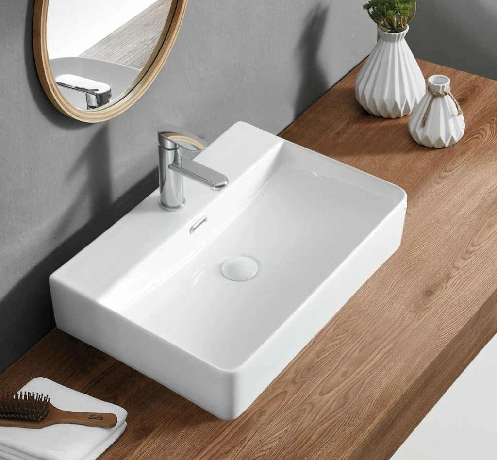
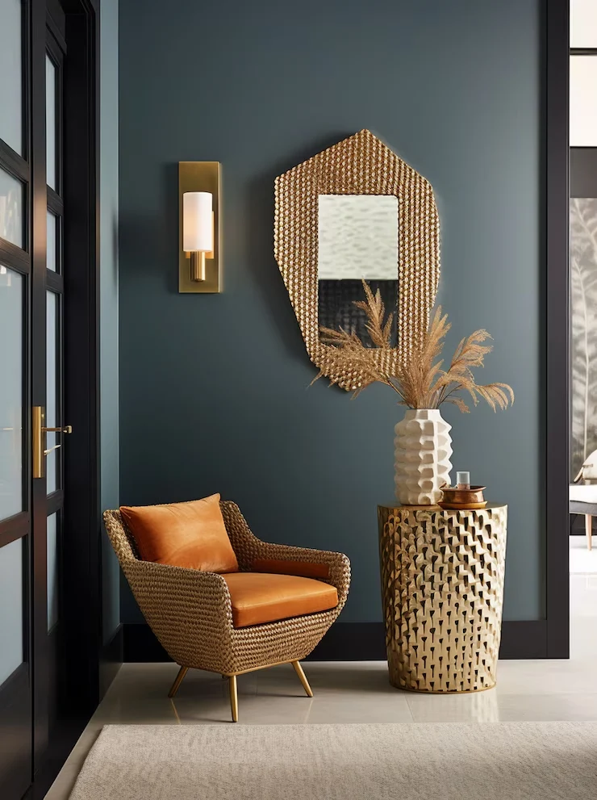
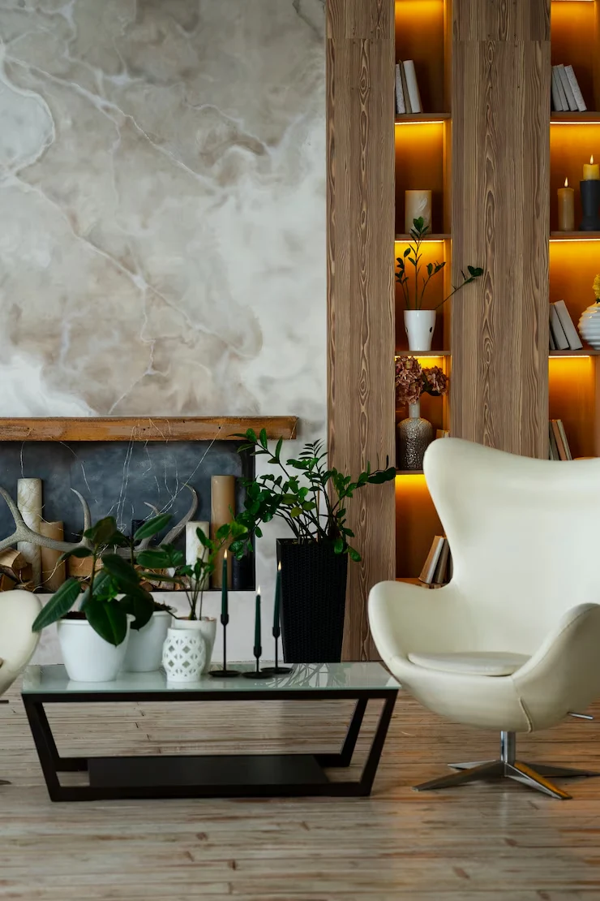
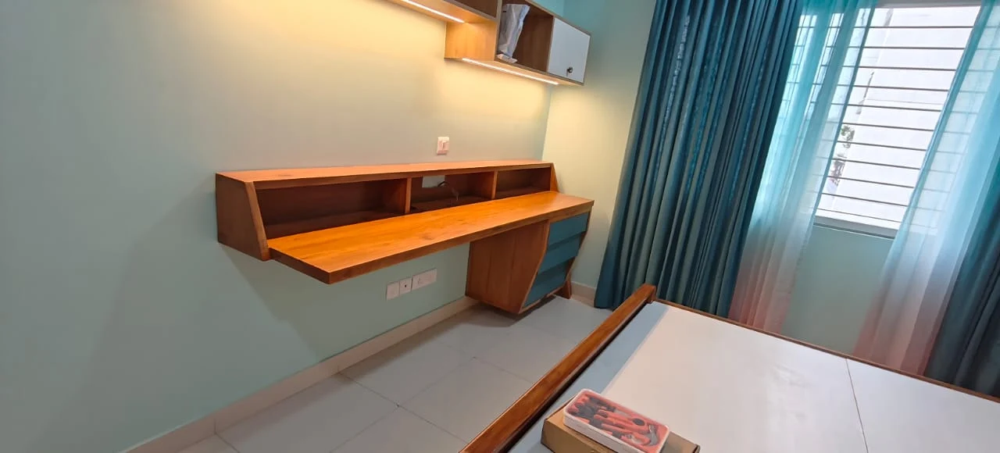
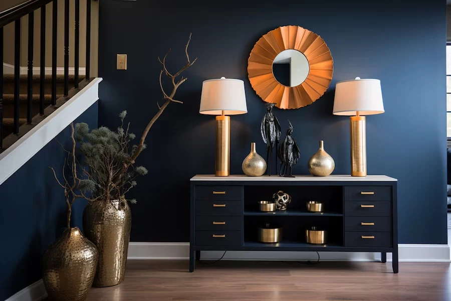

THE JOURNAL / DETAILS / 42
An interior handover checklist for homeowners
A useful starting point for an interior handover checklist for homeowners is to connect the idea with your actual home. An attractive photograph can explain a mood, but your routines, existing belongings and available space should shape the brief.
Four decisions to bring to the discussion
Compare the result with the agreed scope and drawings.
Ask for demonstrations of installed fittings.
Record unfinished or defective items through the agreed process.
Collect product documents and relevant care instructions together.
Turn the idea into a clear brief
Write down what is inconvenient today, what you want to retain and what a better result would allow you to do. Share the available plan, but mark dimensions that have not been checked at the property. Keep essential work separate from optional additions so the first discussion can focus on your priorities.
Use the pictures as conversation starters
In the image collection below, look for one detail you like and one you would change. Explain the reason: easier access, a quieter colour combination, more useful storage or a different arrangement. The images are from the previous website archive; they illustrate ideas rather than a promised specification or a verified project case study.
Before you approve the work
Ask for the agreed drawing, inclusions, finish references and any unresolved decisions in writing. Confirm which elements shown in a visual are included in the proposal. Changes to products, quantities or scope should be explained before they are accepted. For technical installation requirements, use the relevant professional and product instructions.
Take the next step
Tell GS INTERIOR STUDIO about your space and the point from this planning note that matters most to you. A focused requirement is more useful than asking for a room to be copied exactly from a photograph.
10 visual references
Recovered images from gsinteriorstudio.com. Used as inspiration; images repeat across articles and are not presented as verified project case studies.






